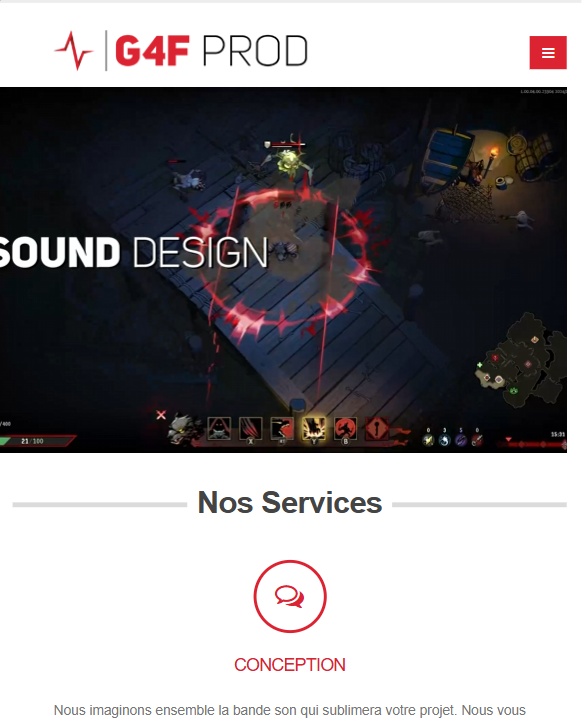
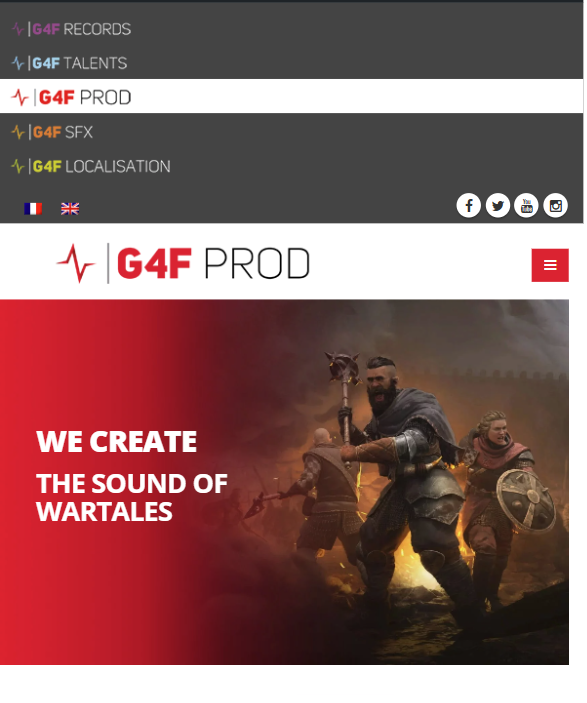
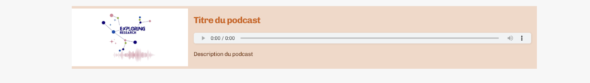
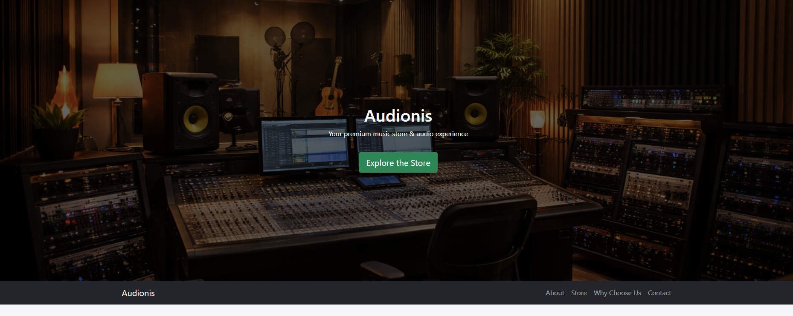
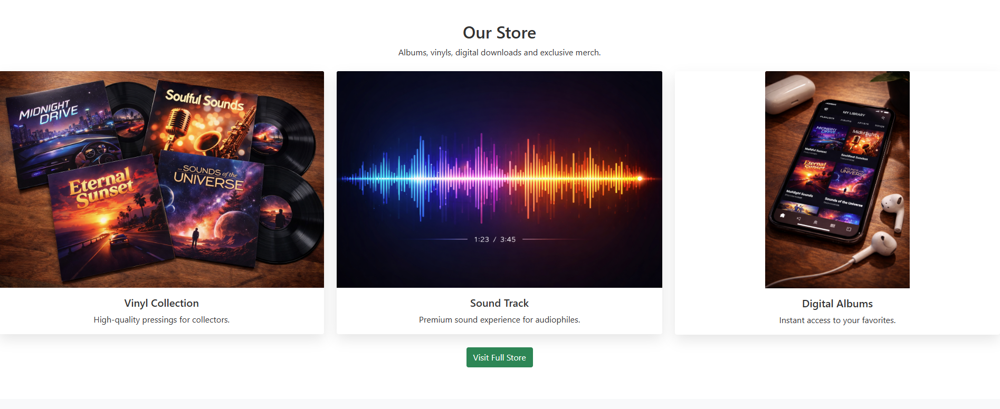

entreprise située à Angoulême, 69 rue de la grand font 16000
Production sonore, audiovisuelle et multimédia
G4F est une entreprise de production sonore située à Angoulême, référence spécialisée dans la post-production sonore pour le jeu vidéo et l'animation, Elle accompagne les studios internationaux sur l'ensemble de la chaîne de création, depuis le sound design et la composition musicale jusqu'à l'intégration technique et la localisation (doublage multi-langues). Elle permet aussi à des personnes souhaitant se lancer dans différents contenus audio de réaliser et suivre leurs projets.
En deuxième année de BTS SIO, un stage en entreprise d’une durée de cinq semaines était obligatoire, prévu du 05 janvier au 06 févier 2026. Pour ce stage, j’ai eu l’opportunité de travailler a G4F. Lors de ce stage j'ai eu l'occasion de travaillé sur leurs site web mission 1 ainsi que sur le site d'une cliente afin de réalisé mission 2 et j'ai eu aussi a leurs presenté une maquette de site web qui pourais proposé a un de leurs client mission 3
Pour ma première mission, c'était de travailler sur le site internet de G4F. Pour cela, j'ai travaillé sur WordPress étant donné qu'il avait créé le site avec le logiciel de WordPress, ce qui n'a pas été simple pour moi dû au manque de connaissance du logiciel qu'il a fallu que je comble Par l'apprentissage de ce dernier. J'ai eu a faire des jeux de teste afin de trouvé les bug et disfonctionnement du site afin de pouvoir proposé une modification de ce dernier a l'entreprise. Je leurs ai proposé des changement et de solutions pour arrangé le site avec une documentation des chagement apporté et les explication de ces dernier. Certaines parties étant gardées cachées au public, je ne peux pas montrer ce document, mais quelques images de changement avec un avant-après ( ajout de la responsive ).

->
Ma seconde mission a été de travailler sur un site de podcaste d'une cliente de G4F, pour cela j'ai dû travailler sur un autre logiciel qui était le sitemaker de Infomaniak, Ce logiciel était encore plus inconnu que WordPress pour moi et j'ai dû l'apprendre de zéro avec les mêmes procédés que pour WordPress. Ma partie consistait à simplifier l'ajout de podcast Pour la cliente sur son site, en sachant qu'il fallait qu'elle n'ait pas à toucher au programme. J'ai donc créé un script accompagné d'un bloc permettant, le script permet de trouver un Fichier audio et une image dans un dossier prénommé afin d'auto-compléter le bloc.

J'ai aussi eu pour mission de faire un site maquette permettant de représenter un possible site qui pourrait être fait pour un client qui fait de la vente.

